Arcus

Creating a User‑Centered Archery Experience
In partnership with Ace Archers — Archery Range & Pro Shop
Creating a User‑Centered Archery Experience
In partnership with Ace Archers — Archery Range & Pro Shop


A mobile app designed to help young archers stay engaged by making their progress visible, meaningful, and encouraging. When archers can see how they're growing, they're more likely to stay curious, confident, and connected to the sport. This app supports that journey through intuitive tracking, gentle guidance, and a focus on long‑term motivation.
Many archers struggle to stay engaged over time due to limited progress visibility, manual and inconsistent tournament tracking, and a lack of tools that support the mental side of the sport. These challenges are especially noticeable among younger or newer archers, who often lose motivation when improvement feels unclear or overwhelming.
The goal of this project is to design a user‑centered archery app that supports archers of all experience levels by making progress easy to understand, simplifying tournament tracking, and providing mental‑training tools that strengthen focus, confidence, and long‑term engagement.
The problem doesn't end with the archer. League managers and club owners face their own version of it: hours of manual setup, scattered communication tools, and league administration that competes with the time they'd rather spend coaching. A tool that serves the people running archery as well as the people doing it removes friction at both ends.
I conducted surveys and informal interviews with local archers, league managers, and club owners to understand their motivations, challenges, and reasons for disengaging from the sport. Speaking with both archers and the people who organize their experiences surfaced different but connected pain points: archers struggling to see their progress, and managers struggling to set up the structures that make progress visible. I also reviewed existing archery apps to identify usability gaps and opportunities for a more engaging experience.
This pain point highlighted the need for clear, visual feedback that helps archers understand how they're improving over time. Moving forward, I focused on designing progress charts and alternate training views that make growth easy to see and celebrate.
Seeing how quickly motivation fades, especially for young archers, led me to incorporate achievement systems and engaging milestones. These features are designed to keep users connected to the sport and excited to continue training.
Archers currently rely on manual methods to track tournament, league, and competitive scores, making it difficult to maintain accurate records or see long‑term progress. This insight guided the decision to include simple score importing and organized competitive history within the app.
The absence of mental‑training tools within apps revealed a major gap in the archery experience, shaping the app's focus on mindset, confidence, and mental clarity. This led to features like mental drills and shot‑reflection tools that help archers understand how their mental state affects performance.
As a league manager, Holden needs a simple way to track competitive results so he can quickly determine winners and monitor archer progress without relying on manual methods.
As a young archer, Riley needs a clear, supportive way to track improvement so she can stay motivated and understand her progress even when scores fluctuate.
League participation plays a meaningful role in keeping archers engaged, regardless of age or experience level. Structured competitive environments offer clear progress tracking, consistent milestones, and a sense of accomplishment that can be hard to maintain through casual practice alone. By supporting league management within the app, I aimed to strengthen this ecosystem: making results easier to track, reducing administrative friction, and helping archers stay connected to their community.
For Holden, simplifying league setup and score tracking not only improves his workflow but also directly benefits the athletes he supports. Clear standings, organized results, and accessible progress data contribute to a more motivating and rewarding experience for archers, reinforcing long‑term involvement in the sport.
| Create Account | Set Up League | Import / Enter Results | Review Progress | Determine Winners | Share Results | |
|---|---|---|---|---|---|---|
| Tasks |
|
|
|
|
|
|
| Feelings |
Curious
Hopeful
Slightly intimidated
|
Focused
Mildly overwhelmed
Eager
|
Relieved
Frustrated by manual entry
|
Motivated
Confident
Organized
|
Excited
Empowered
Satisfied
|
Accomplished
Proud
Content
|
| Opportunities |
|
|
|
|
|
|


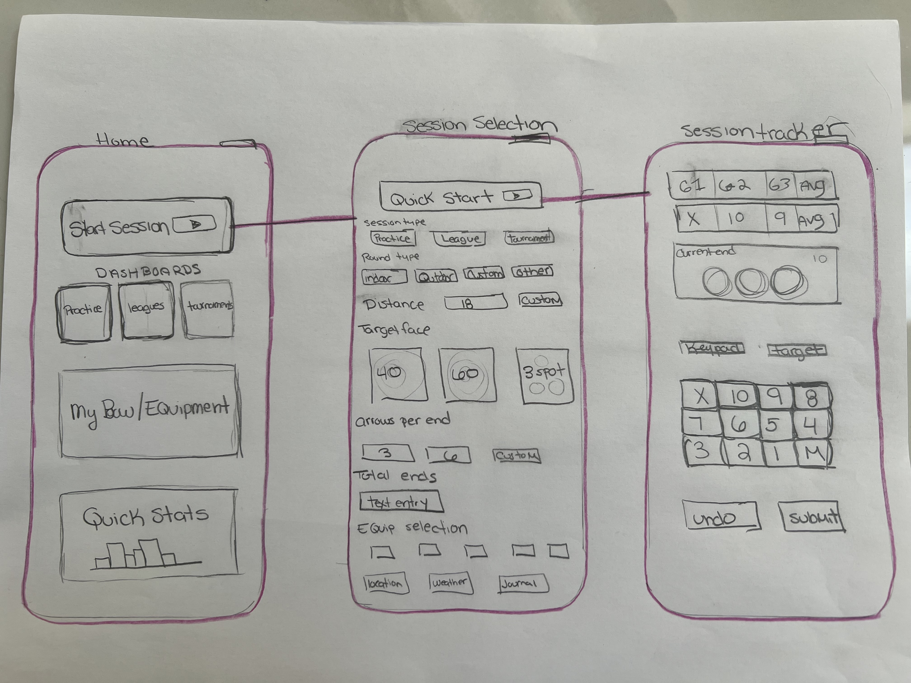
Tap, swipe, or use the arrows to explore the prototype flow.
To evaluate the clarity and usability of the core features in the Arcus app, I conducted a hybrid moderated and unmoderated usability study. I began each session by being available to answer questions and observe initial interactions, then allowed participants to explore the prototype independently over several days. This approach helped me understand both first‑impression usability and real‑world usage patterns.
Alongside testing my own designs, I also aimed to learn what users felt was missing from the archery apps they currently use and what additional benefits they wished those tools offered.
This method allowed me to capture both guided insights and natural, self‑directed behavior.
Participants instinctively looked for a "history" or "recent scores" section and felt frustrated when they had to navigate multiple screens to find past results.
While users liked the idea of visual progress tracking, some were unsure what certain icons or color indicators represented.
Holden (league manager persona) emphasized that entering multiple scores at once should be quick and error‑proof, especially during busy league nights.
Younger archers, like Riley, appreciated supportive language but wanted clearer explanations of what their progress meant: “Am I improving? By how much?”
Participants consistently mentioned gaps in the tools they currently use: difficulty tracking long‑term progress, no mental‑focus features, limited league support, too much manual data entry, lack of personalization, and inability to review past tournament data.
These insights validated the direction of the app and highlighted opportunities to differentiate the experience.
Resolved issues such as the Quick Start page freezing before fully loading.
Reduced steps and friction for both individual practice and league scoring.
Added clearer labels and context to charts and indicators.
Confidence‑building prompts, robust league management, automated score importing, and personalized progress insights.
This hybrid study provided a balanced view of both guided and natural user behavior. The insights helped refine the app's core flows and validated the need for a tool that supports both the practical and mental sides of archery. By understanding what users struggle with in existing apps, I was able to design an experience that feels clearer, more supportive, and more aligned with how archers actually train, compete, and grow.
Based on user feedback and gaps identified in existing archery apps, several opportunities emerged to further enhance the experience for both archers and league managers.
Reduce manual setup time and minimize errors during busy league nights with auto‑assigned lanes for each session.
A centralized standings hub allowing archers and coaches to quickly check rankings, results, and progress.
Built‑in communication for coaching, motivation, reminders, and feedback directly through the app.
Simplify the information architecture to reduce cognitive load and make key features easier to find.
With usability insights applied, every screen comes to life. These screenshots capture the launched Arcus app as it first arrived in the App Store.
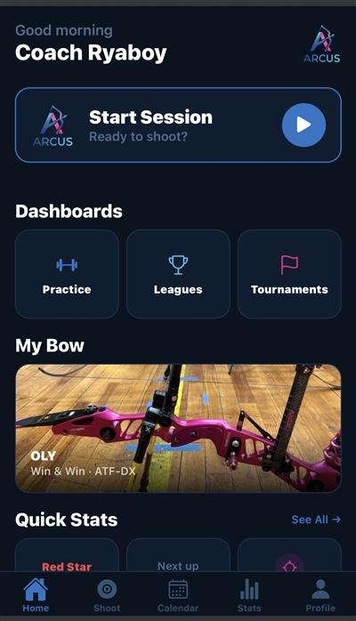
Top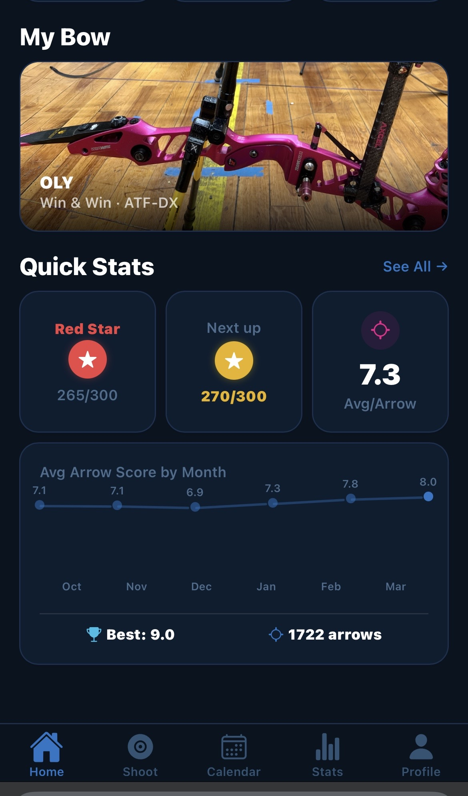
Scrolled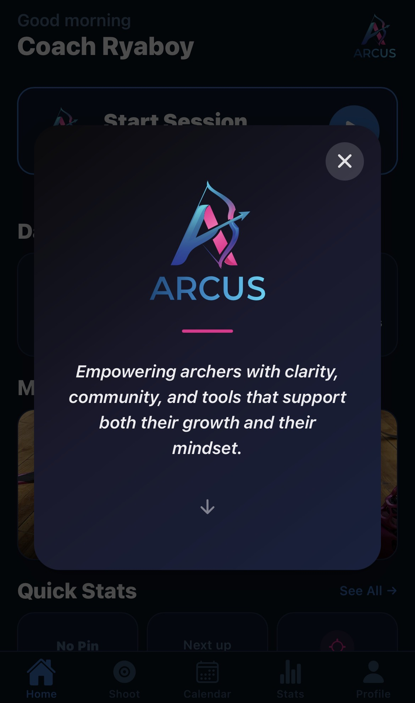
About Modal Overview
Overview
 New Session — Top
New Session — Top
 New Session — Scrolled
New Session — Scrolled
 Monthly View
Monthly View
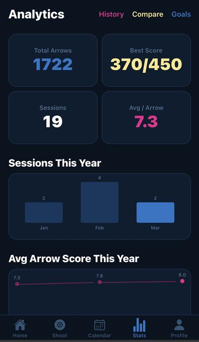
Overview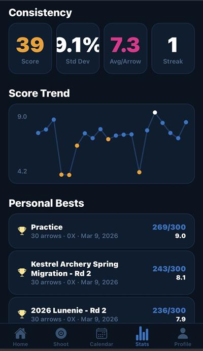
Trends & Bests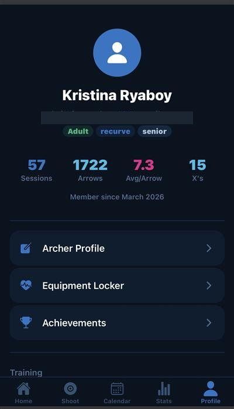
Overview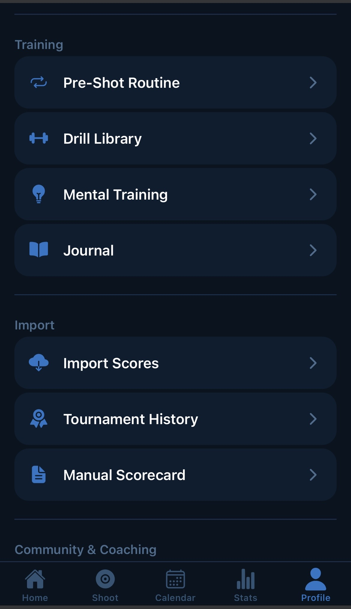
Training & Import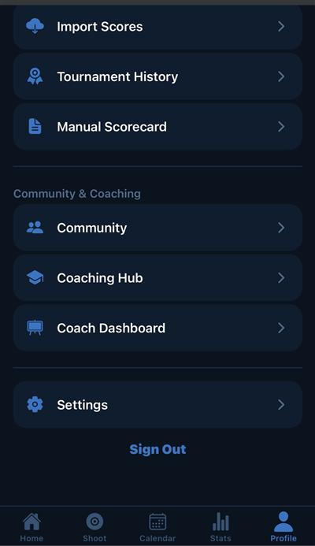
Community & Settings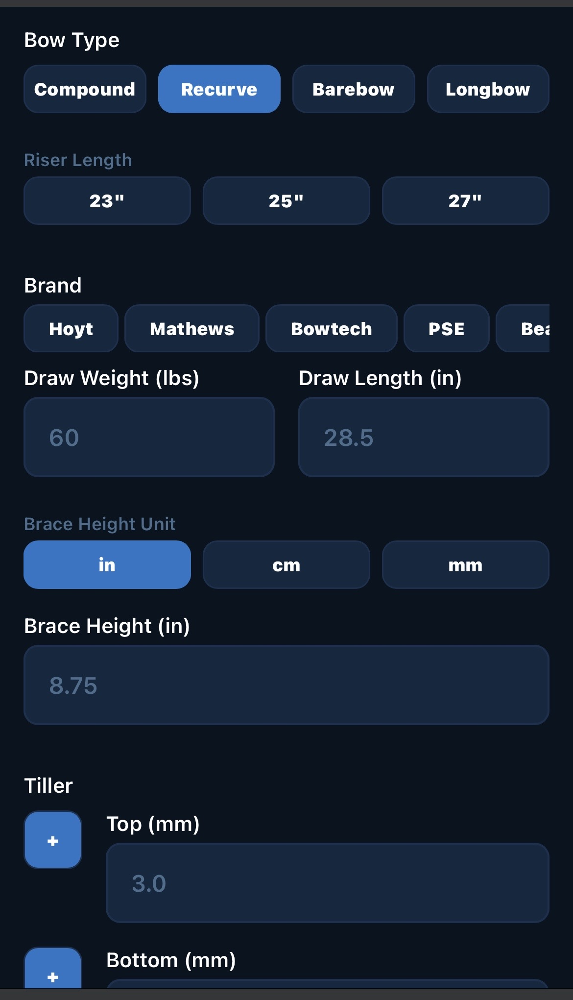
Bow Entry — Top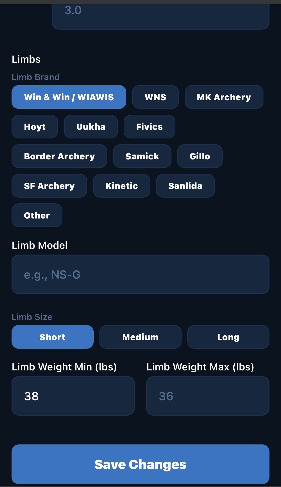
Bow Entry — Scrolled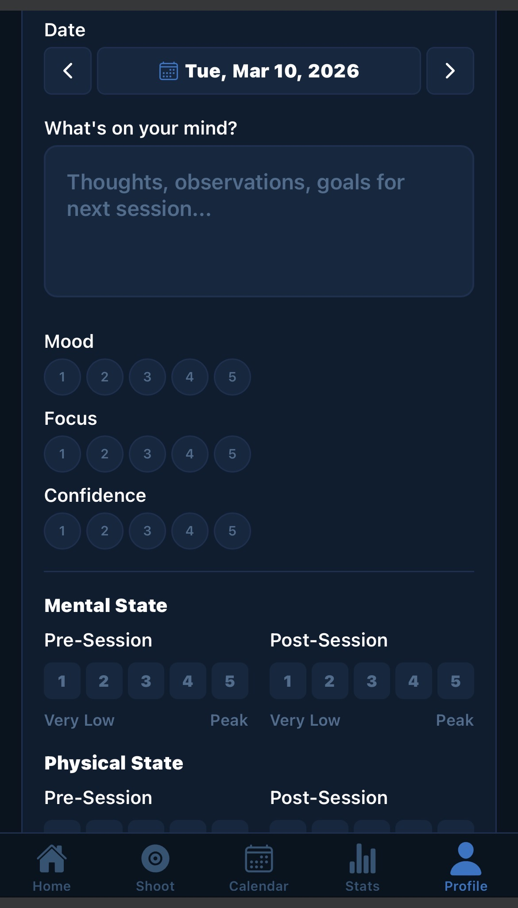
Journal EntryLaunch wasn't the finish line. It was the moment Arcus stopped being a concept and started being shaped by the people who used it. The weeks following release brought feedback I couldn't have anticipated from research alone: insights about who archers really are, how they actually train, and what they need from a tool meant to grow with them. The updates below reflect that listening. Not a feature dump, but a steady response to what users showed me mattered.
Archery is a more social sport than tracking apps tend to acknowledge. Most archers train alongside teammates, learn from coaches, and shoot inside structured leagues. The earliest post‑launch additions were about meeting that reality.
Live Scoring lets archers shoot the same session in real time, regardless of whether they're standing on the same line. A host creates a room, others join with a short code, and scores update live across every device. A resume banner picks up sessions interrupted mid‑shoot, so a phone call or a coaching break no longer means losing the round.
 Create Live Room
Create Live Room
 Leaderboard
Leaderboard
 Scoring Page
Scoring Page
The Coaching Hub gives coaches a dedicated space to communicate with their archers, privately or in group chats organized around teams or training cohorts. It moves coaching out of scattered text threads and into the same app where progress is already being tracked.
 Coaching Hub
Coaching Hub
 Group Messaging
Group Messaging
The League Dashboard came directly from a request by John Savage, manager at Ace Archers, who was losing hours each week to manual league setup and standings updates. The dashboard lets managers create and run multiple concurrent leagues, while members and visitors can follow standings in real time. It's the first feature in Arcus designed for a different user role entirely: not the archer, but the people running the room they shoot in.
 League Dashboard
League Dashboard
One of the clearest post‑launch insights was that an archer is rarely just one kind of archer. The same person might shoot recurve indoors on Tuesdays and barebow outdoors on Saturdays. The original app forced them into a single identity. The updates in this theme restructured the app around the truth: identity in archery is plural.
Profiles now support multiple bow classes and divisions, with shooting profiles automatically created for each archery‑style and venue combination. Switching between them takes a single tap, and the rest of the app (stats, achievements, history) adjusts to match.
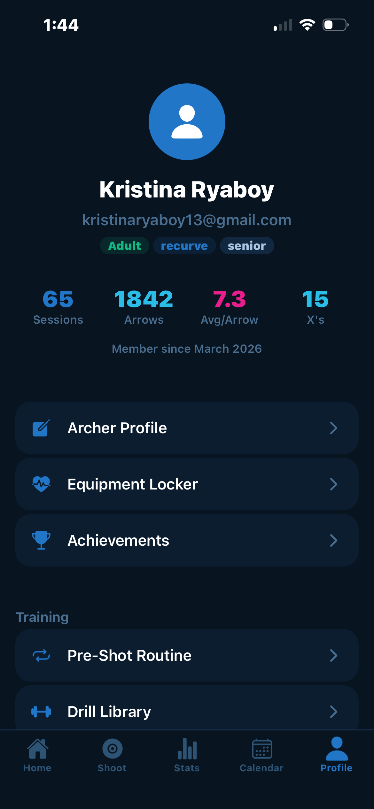
Before After
After
A persistent Indoor/Outdoor and bow‑class filter now lives across Home, Stats, History, and Achievements, removing the friction of re‑selecting context every time an archer moves between screens. The new Home page also surfaces session types (Practice, Live Scoring, Tournament, League) as direct entry points.
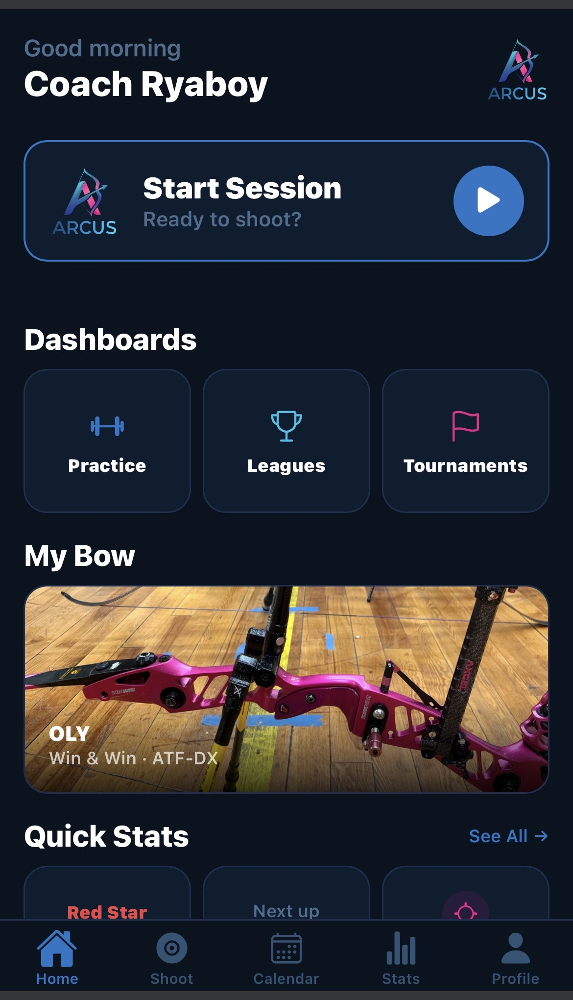
Before After
After
The original analytics view spread its data across multiple screens, with some metrics getting cut off mid‑chart. The redesign condenses the same information into a single, clear view, and respects the active venue and bow‑class filters, so an archer's outdoor recurve stats are no longer mixed with their indoor compound numbers.
 After
After
Some of the most important post‑launch changes came from a single user, a single observation, a single fix. These are the small updates that don't show up in marketing copy but earn long‑term trust.
USA Archery pin levels are a meaningful achievement system for serious competitors, and Arcus's original logic only counted the most recent five sessions toward pin progress. A user with years of imported historical scores reported that those scores weren't being recognized, effectively erasing their existing pin levels. The fix now uses all‑time scores, restoring credit for the work archers had already done before the app existed.
Like the League Dashboard, the integrated shot timer came from a direct user request. Andrea asked for it so she could stop juggling two apps during practice: one for scoring, one for timing. The timer is built around the USA Archery standard shot clock and defaults its time‑per‑arrow based on the active session type, with manual adjustment available for non‑standard formats. It mirrors the cues archers already know from competition: audio beeps match the familiar tournament pattern, and the display shifts color at the 30‑second warning. The screen rotates automatically with the phone so the timer stays readable however the archer holds it. When the round completes, it returns to the scoring page on its own so the archer doesn't lose their flow. A manual exit is always available.
 Active Timer
Active Timer
 Settings & Defaults
Settings & Defaults
The Shoot page picked up two small but high‑impact additions: a manual entry button for quickly logging completed practice sessions without running a live tracker, and a session‑type filter on the history list so archers can isolate practice, scoring, tournament, and league sessions independently.
The usability study provided clear direction for refining the core experience of the archery app. By observing both guided and independent interactions, I gained insight into how archers and league managers naturally navigate the interface, what they value most, and where they encounter friction. The improvements made thus far have significantly strengthened the clarity and usability of the app's foundation.
Beyond immediate design changes, the study revealed deeper opportunities to support the archery community. Users consistently expressed a desire for features missing in existing tools, such as better league management, clearer standings, and more personalized motivation. These insights helped shape a roadmap of future enhancements, including automatic lane assignment, streamlined navigation, and communication tools for coaches and athletes.
This project also reinforced my own growth as a designer. I learned the value of giving users space to explore independently, the importance of listening for what isn't being said, and how meaningful it is to design for a community I'm personally connected to.
As a proud member of the archery community, this project is not a one‑and‑done case study for me. It will continue to mature and evolve just as archers do, all through practice, iteration, and a commitment to growth.
My goal is to keep refining this tool alongside the people who inspire it, ensuring it remains supportive, intuitive, and genuinely helpful for athletes and coaches alike.
The voices of the archery community ultimately decide whether a tool is worth keeping. These are theirs.
"I've been using Arcus Elite regularly as part of my archery training, and it's quickly become one of my go‑to tools. What stands out most isn't just the functionality. It's how thoughtfully Kristina has designed the experience from a user perspective.
Arcus Elite brings together features that are typically spread across multiple niche tools, but in a way that feels intuitive and seamless. I never have to think about where to go or how to log something. It just flows.
What's been especially impressive is how responsive Kristina has been to feedback. I've shared suggestions based on real training scenarios, and Kristina consistently translates them into meaningful improvements that enhance usability without adding complexity.
Kristina has a strong ability to understand real user behavior, prioritize what matters, and iterate quickly. The result is an app that doesn't just work. It genuinely improves my training experience."
"Kristina is a phenomenal person. Always pepped up and quick witted. Until a few weeks ago, I only knew her as an archer, but now I see the multi‑faceted qualities she possesses: coach, IT expert, and recently, app developer.
Her app, Arcus, is the best tool I have seen of its kind for an archer. Not only does it allow you to customize and track your practice, it helps you visualize progression and plan for the future. What other apps can only do individually, Arcus can do so much better. You can even import your scores from official competitions with ease. Even better than that, you can do live sessions with friends that use the app, regardless of platform.
This is a very useful and wonderful tool, which now archers outside of our club are taking advantage of. What seemingly started as an in‑house project has turned into something useful for the whole community in the state of Massachusetts. I, for one, can't wait to see what else Kristina will come up with!"
"As someone not really into sports, Arcus is easily my most favorite archery app. The design is clean and intuitive which makes tracking progress effortless. I especially like that I can just quickly tap the screen to mark where I've shot. There's no other app like this!"
"I love Arcus! It is the most comprehensive app I have seen. Especially like the chance to score with others and follow their results. My archery coach downloaded it right away, and she has been in the sport for 30 years and has coached many archers who win top podiums."